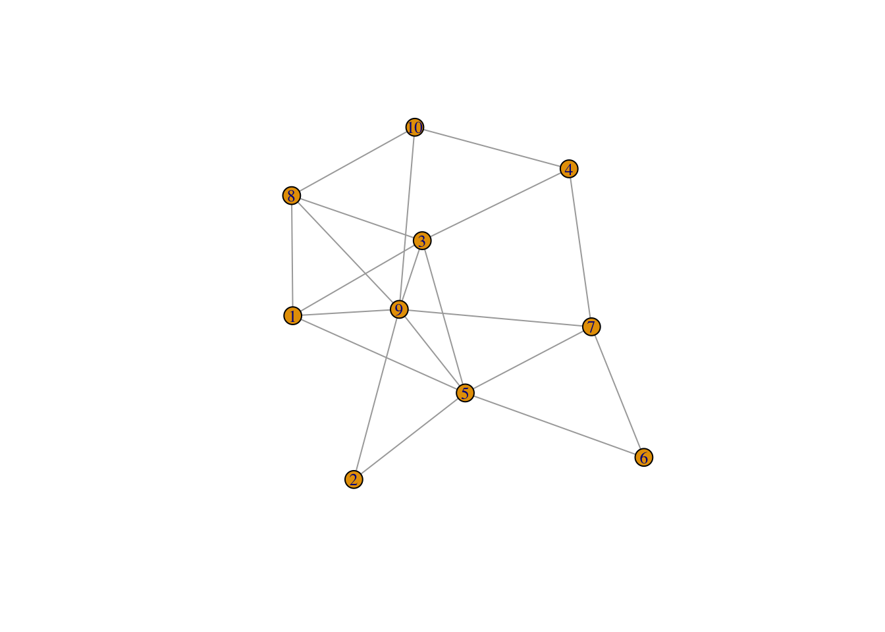

Visualizing the network is crucial to understand its structure and identify insights.This document will demonstrate basic approaches for visualizing networks in R using two popular packages:
igraph for simple static network visualizationsnetworkD3 for interactive, web-based
visualizationsProper data wrangling and formatting is necessary in order to generate the network diagrams correctly. The examples below will walk through typical workflows for preparing network data and producing plots for analysis.
igraphThe igraph package provides functionality for
generating, manipulating, and analyzing network data in R. It can also
produce basic network visualizations.
This code chunk loads the igraph package and uses the
erdos.renyi.game() function to generate a random Erdős-Rényi
graph with 10 nodes and an edge probability of 0.5.
The Erdős-Rényi model assigns edges randomly between nodes with a given probability, creating a purely random network topology.
The set.seed() ensures consistent results across
multiple runs.
##
## Attaching package: 'igraph'## The following objects are masked from 'package:stats':
##
## decompose, spectrum## The following object is masked from 'package:base':
##
## unionThe plot() function provides a quick way to visualize
our graph g.
We customize the vertex size and label size slightly to improve readability.

This generates a fast static network plot. It provides a simple visualization for small graphs. However, for larger networks, an interactive diagram is often much easier to work with.
networkD3The networkD3 package leverages the D3.js JavaScript
library to create interactive network visualizations that can be viewed
in the RStudio Viewer pane or web browser.
To use networkD3, the network data must be formatted as
“node” and “edge” data frames.
First we manually create an edge list data frame containing source and target nodes.
edges <- data.frame(
source = c("A", "A", "A", "A", "B", "B", "C", "C", "D"),
target = c("B", "C", "D", "J", "E", "F", "G", "H", "I")
)Then we create a node data frame with the unique node names.
We add an id column assigning integer indices to each
node.
Finally, we map the source and target strings to the corresponding
index values from the nodes dataframe using
match().
edges$source <- match(edges$source, nodes$name) - 1
edges$target <- match(edges$target, nodes$name) - 1Now our data is properly formatted for the network graph.
The forceNetwork() function brings the nodes and edges
together to generate the visualization.
We pass our prepared edges and nodes data
frames, specifying the relevant column names.
Setting zoom = TRUE enables zooming and panning for
deeper exploration.
forceNetwork(
Links = edges, Nodes = nodes, Source = "source",
Target = "target", NodeID = "name", Group = "name", zoom = TRUE
)This network diagram is now interactive and much more readable for understanding the network structure. The ability to zoom and pan allows exploration of patterns and communities in large networks with many nodes and edges.